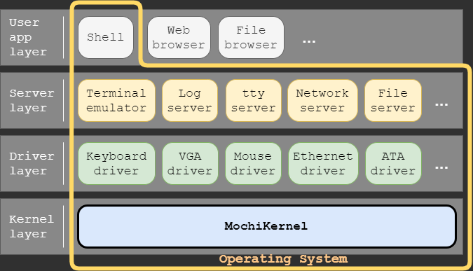

はじめに
カーネル
オペレーティングシステムを構成する中核となるプログラムのこと。
MochiKernelは、PC/AT互換機上で動作するフルスクラッチ開発のマイクロカーネルです。
マイクロカーネルとは、デバイスドライバやファイルシステムなどをカーネル上のユーザ空間で動作するプロセスとしてカーネルから分離してカーネルを小さくする事で、安全で信頼性の高いカーネルの設計を容易にします。反対に、デバイスドライバやファイルシステムなどを含めるカーネルをモノリシックカーネルと呼び、カーネルの複雑さが増す一方で機能間のインタフェースが単純のため高い性能の実現が容易に行えます。モノリシックカーネルはLinuxやWindows9x系などで採用されており、マイクロカーネルはMachやMinixなどで採用されています。MochiKernelは、性能よりも安全で信頼性を重視するためにマイクロカーネルを選択しています。
MochiKernel上で動作するプログラム（タスク）は、ユーザ、サーバ、ドライバの3つのレベルで管理され、MochiKernelが提供する機能によって隣り合ったレベル間でのみタスク間通信が行えます。また、ドライバタスクだけがデバイスからの割込み通知を受信でき、デバイスにアクセス出来ます。
MochiKernelを用いたオペレーティングシステムの構成例を以下に示します。

MochiKernelを用いたオペレーティングシステム構成例
MochiKernelを用いたオペレーティングシステム構成例